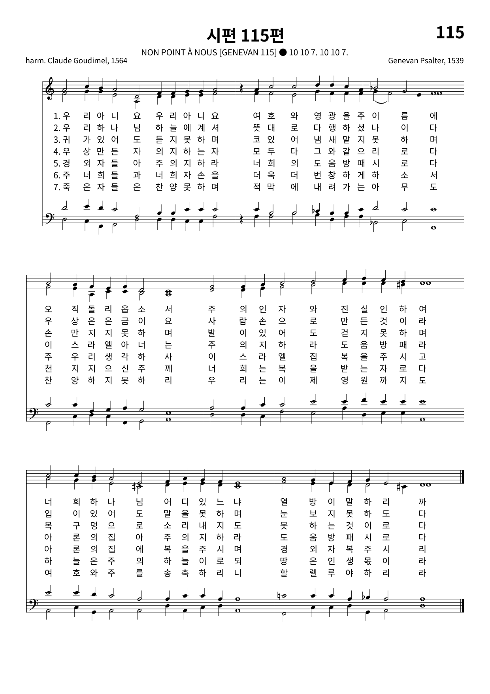

시편 115편
NON POINT À NOUS [GENEVAN 115] · 10 10 7. 10 10 7.
곡조: Genevan Psalter, 1539 · 화성: Claude Goudimel, 1564 · 가사: 개역한글판 시편 115편 편역(AI 초벌 편역판 · 신학 감수 전) · 7절
악보 PDF MusicXML(출력용) MusicXML(반주용, 전주·반복 포함) 개역한글 시편 115편 읽기

가사
1절
우리 아니요 우리 아니요
여호와 영광을 주 이름에
오직 돌리옵소서
주의 인자와 진실 인하여
너희 하나님 어디 있느냐
열방이 말하리까
우리 아니요 우리 아니요
여호와 영광을 주 이름에
오직 돌리옵소서
주의 인자와 진실 인하여
너희 하나님 어디 있느냐
열방이 말하리까
2절
우리 하나님 하늘에 계셔
뜻대로 다 행하셨나이다
우상은 은금이요
사람 손으로 만든 것이라
입이 있어도 말을 못하며
눈 보지 못하도다
우리 하나님 하늘에 계셔
뜻대로 다 행하셨나이다
우상은 은금이요
사람 손으로 만든 것이라
입이 있어도 말을 못하며
눈 보지 못하도다
3절
귀가 있어도 듣지 못하며
코 있어 냄새 맡지 못하며
손 만지지 못하며
발이 있어도 걷지 못하며
목구멍으로 소리 내지도
못하는 것이로다
귀가 있어도 듣지 못하며
코 있어 냄새 맡지 못하며
손 만지지 못하며
발이 있어도 걷지 못하며
목구멍으로 소리 내지도
못하는 것이로다
4절
우상 만든 자 의지하는 자
모두 다 그와 같으리로다
이스라엘아 너는
주 의지하라 도움 방패라
아론의 집아 주 의지하라
도움 방패시로다
우상 만든 자 의지하는 자
모두 다 그와 같으리로다
이스라엘아 너는
주 의지하라 도움 방패라
아론의 집아 주 의지하라
도움 방패시로다
5절
경외자들아 주 의지하라
너희의 도움 방패시로다
주 우리 생각하사
이스라엘 집 복을 주시고
아론의 집에 복을 주시며
경외자 복 주시리
경외자들아 주 의지하라
너희의 도움 방패시로다
주 우리 생각하사
이스라엘 집 복을 주시고
아론의 집에 복을 주시며
경외자 복 주시리
6절
주 너희들과 너희 자손을
더욱더 번창하게 하소서
천지 지으신 주께
너희는 복을 받는 자로다
하늘은 주의 하늘이로되
땅은 인생 몫이라
주 너희들과 너희 자손을
더욱더 번창하게 하소서
천지 지으신 주께
너희는 복을 받는 자로다
하늘은 주의 하늘이로되
땅은 인생 몫이라
7절
죽은 자들은 찬양 못하며
적막에 내려가는 아무도
찬양하지 못하리
우리는 이제 영원까지도
여호와 주를 송축하리니
할렐루야 하리라
죽은 자들은 찬양 못하며
적막에 내려가는 아무도
찬양하지 못하리
우리는 이제 영원까지도
여호와 주를 송축하리니
할렐루야 하리라